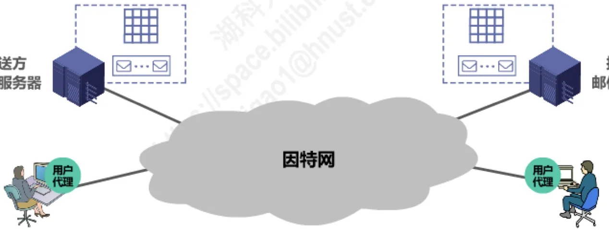
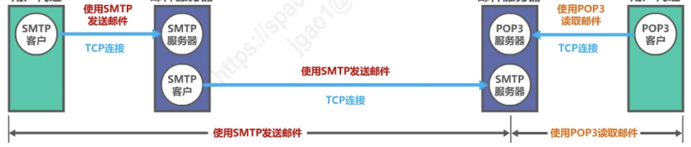
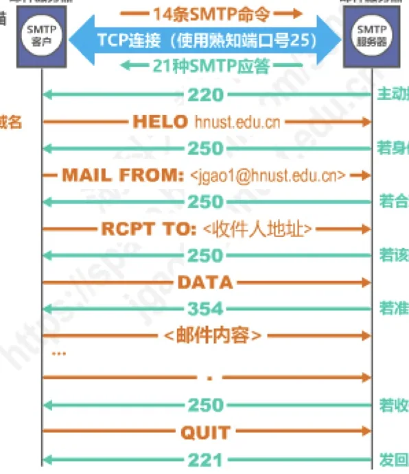
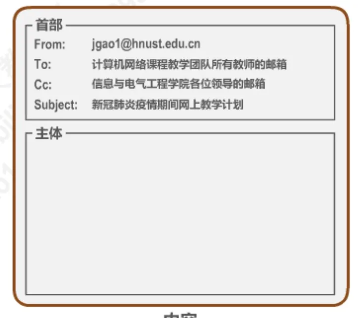
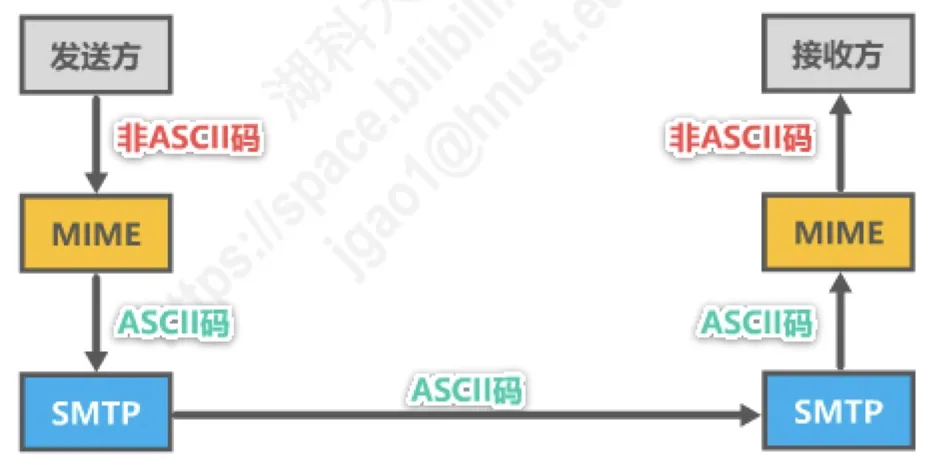
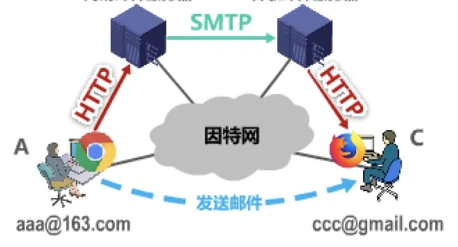

计算机通信与网络 · 第 6 章 应用层
6.6 电子邮件
电子邮件是因特网上最早流行起来的应用，也是今天使用最普遍的应用之一。这一节沿着「一封邮件从写信到读信」的完整路径展开：先看电子邮件系统由哪些构件组成，再看发送邮件的 SMTP 协议如何把邮件从发送方服务器送到接收方服务器，然后弄清邮件本身的格式，以及 MIME 如何让邮件能够传送图片、声音这类非 ASCII 内容，最后看接收方用 POP3、IMAP 或万维网把邮件取回来。
1. 电子邮件概述
电子邮件（E-mail）是因特网上最早流行的一种应用，至今仍然是因特网上最重要、最实用的应用之一。把它与传统电话通信对比，能看出它究竟解决了什么问题：电话属于实时通信，存在两个明显缺点——主叫和被叫双方必须同时在场；一些并不十分紧迫的电话，也常常不必要地打断人们的工作或休息。
电子邮件的工作方式则与邮政系统的寄信很相似，一次投递要经过三个步骤：
- ① 发件人把自己的邮件发送到自己使用的邮件服务器；
- ② 发件人的邮件服务器按邮件的目的地址，将其转发到收件人邮件服务器中收件人的邮箱；
- ③ 收件人在方便的时候访问自己邮件服务器中的邮箱，取回收到的电子邮件。
正因为不必双方同时在场，电子邮件使用方便、传递迅速而且费用低廉。它不仅能传送文字信息，还可以附上声音和图像。它的普及甚至改变了通信业的格局：许多国家已经正式取消了电报业务，我国电信局的电报业务也因电子邮件的普及而濒临消失。
2. 电子邮件系统的组成
电子邮件系统采用客户/服务器方式，由三个主要构件组成：用户代理、邮件服务器，以及电子邮件所需的协议。
- 用户代理是用户与电子邮件系统的接口，又称为电子邮件客户端软件。撰写、发送、阅读与管理邮件都在这里完成。
- 邮件服务器是电子邮件系统的基础设施。因特网上所有的 ISP 都有邮件服务器，它的功能是发送和接收邮件，同时还要负责维护用户的邮箱。
- 协议分为两类：邮件发送协议（例如 SMTP）和邮件读取协议（例如 POP3、IMAP）。

这里要留意的是一件事：用户代理与邮件服务器之间、以及两台邮件服务器之间，使用的协议并不相同。发送方向上用 SMTP 把邮件「推」到服务器，接收方向上则用 POP3 一类的读取协议把邮件「拉」回来——这两条路径，正是本节后面几节要分别讲的内容。SMTP 只负责发送方向：它支持从用户代理向邮件服务器发送邮件，也支持在邮件服务器之间发送邮件，但不支持从邮件服务器向用户代理发送邮件，那个方向（取信）由读取协议承担。
3. 简单邮件传送协议 SMTP
（1）发送方如何把邮件送到接收方
简单邮件传送协议 SMTP（Simple Mail Transfer Protocol）负责的是发送这一侧。发送方用户代理把邮件交给发送方邮件服务器时，用户代理是 SMTP 客户，邮件服务器是 SMTP 服务器；两台邮件服务器之间同样是 SMTP 客户与 SMTP 服务器的关系。整个过程大致是这样推进的：
- 发送方邮件服务器周期性地对邮件缓存进行扫描（例如每 30 分钟一次）；
- 一旦发现有邮件，就以 SMTP 客户的身份与接收方邮件服务器的 SMTP 服务器建立 TCP 连接，使用熟知端口号 25；
- 在这条 TCP 连接上，双方按约定交换 14 条 SMTP 命令和 21 种 SMTP 应答，完成一次邮件的传送。

（2）一次完整的命令与应答
把一次完整的 SMTP 交互按顺序读一遍，就能记住它的工作过程。下面把客户端发出的命令写在左侧，服务器回的应答写在右侧：
220 ... ; 服务就绪
HELO hnust.edu.cn → 250 ; 说明身份
MAIL FROM:<发件人> → 250 ; 邮件来自何方
RCPT TO:<收件人> → 250 ; 邮件去往何地
DATA → 354 ; 准备接收内容
<邮件内容> → 250 ; 收件成功
QUIT → 221 ; 断开连接逐步来看：服务器先用 220 应答，表示主动推送服务就绪——应答代码后面通常还跟着描述信息，例如「220 163.com Anti-spam GT for Coremail System」；客户端用 HELO 命令说明自己的身份并告知自己 SMTP 服务器的域名，若身份有效就回 250，否则回其他代码（例如 421 表示服务不可用）；接着 MAIL FROM 告知邮件来自何方，RCPT TO 告知邮件去往何地，只有地址合理、邮箱存在时才回 250；DATA 表示客户端准备发送邮件内容，服务器若准备好接收就回 354；邮件内容发送完毕还要发送一个结束符，收件成功后回 250；最后客户端用 QUIT 请求断开连接，服务器回 221，表示接受请求并主动断开连接。

理解这个过程时有三个细节要注意：一是为了简单起见，这里省去了认证过程；二是应答代码后面一般都跟有简单的描述信息；三是不同的 SMTP 服务器对相同应答代码给出的描述信息可能不同。
4. 电子邮件的信息格式
邮件内容长什么样，并不是由 SMTP 定义的——SMTP 只管「怎么送」。电子邮件的信息格式由 RFC 822 单独定义，这个文档已在 2008 年更新为 RFC 5322。
一个电子邮件分为信封和内容两部分，而内容又由首部和主体两部分构成。首部就是写信时我们熟悉的那些字段：From（发件人）、To（收件人）、Cc（抄送）、Subject（主题）；主体则是邮件的正文。用户只负责写首部和主体，邮件系统会自动提取所需信息，把它们写在信封上——这与邮政系统里「信纸装在信封中、信封上写明地址」的结构正好对应。

5. 多用途因特网邮件扩展 MIME
SMTP 有一个先天的限制：它只能传送 7 比特 ASCII 码文本数据，不能传送可执行文件或其他的二进制对象。因此它不能满足传送多媒体邮件（例如带有图片、音频或视频数据）的需要；许多非英语国家的文字（例如中文、俄文，甚至带有重音符号的法文或德文）也无法用 SMTP 直接传送。
为解决 SMTP 传送非 ASCII 码文本的问题，提出了多用途因特网邮件扩展 MIME（Multipurpose Internet Mail Extensions）。它主要做了三件事：
- 增加了 5 个新的邮件首部字段，这些字段提供了有关邮件主体的信息；
- 定义了许多邮件内容的格式，对多媒体电子邮件的表示方法进行了标准化；
- 定义了传送编码，可对任何内容格式进行转换，而不会被邮件系统改变。

于是非 ASCII 码内容先由发送方的 MIME 转换成 ASCII 码，交给 SMTP 传送，到达后再由接收方的 MIME 还原（图 5）。实际上，MIME 不仅仅用于 SMTP，也用于后来的同样面向 ASCII 字符的 HTTP。
6. 邮件读取协议 POP3 与 IMAP
邮件已经躺在接收方邮件服务器里了，接收方怎么把它取回自己的计算机？常用的邮件读取协议有两个：
- 邮局协议 POP（Post Office Protocol），POP3 是其第三个版本，是因特网正式标准。它非常简单、功能有限：用户只能以下载并删除方式或下载并保留方式，把邮件从邮件服务器下载到自己的计算机，不允许用户在邮件服务器上管理自己的邮件（例如创建文件夹、对邮件进行分类管理等）。
- 因特网邮件访问协议 IMAP（Internet Message Access Protocol），IMAP4 是其第四个版本，目前还只是因特网建议标准。它功能比 POP3 强大：用户在自己的计算机上就可以操控邮件服务器中的邮箱，就像在本地操控一样，因此 IMAP 是一个联机协议。
两个协议都采用基于 TCP 连接的客户/服务器方式：POP3 使用熟知端口 110，IMAP4 使用熟知端口 143。
7. 基于万维网的电子邮件
如今很多人根本不安装邮件客户端，而是直接用浏览器收发邮件，这就是基于万维网的电子邮件。通过浏览器登录（提供用户名和口令）邮件服务器的万维网网站，就可以撰写、收发、阅读和管理电子邮件。
这种工作模式与 IMAP 很类似，不同之处在于用户计算机无需安装专门的用户代理程序，只需要使用通用的万维网浏览器；邮件服务器网站通常都提供强大而方便的邮件管理功能，用户可以直接在网站上管理和处理自己的邮件，而不需要把邮件下载到本地管理。在协议使用上它有自己的分工：用户浏览器与邮件服务器网站之间使用 HTTP 协议，而邮件服务器之间仍然使用 SMTP 协议。

至此，一封邮件的完整旅程就清楚了：用户代理用 SMTP 把邮件送到发送方邮件服务器，发送方邮件服务器用 SMTP 把它送到接收方邮件服务器，接收方再用 POP3、IMAP 或万维网把它取走。其中 HTTP 的细节将在 6.7 节（万维网 WWW）中讨论；而本节反复出现的「端口号」是怎么一回事，可以回看 5.2 节。
本节小结
- 电子邮件系统采用客户/服务器方式，三个主要构件是用户代理、邮件服务器和协议；协议分为发送协议与读取协议两类。
- 发送用 SMTP：基于 TCP，熟知端口 25，只负责发送方向（用户代理 → 邮件服务器、邮件服务器 → 邮件服务器），不用于从邮件服务器向用户代理取信；一次传送要交换 14 条命令、21 种应答。
- 邮件格式由 RFC 822（2008 年更新为 RFC 5322）定义：分为信封与内容，内容又分首部（From、To、Cc、Subject）与主体。
- SMTP 只能传送 7 比特 ASCII 码文本，MIME 通过增加首部字段、定义内容格式与传送编码，把非 ASCII 码内容编码后再交给 SMTP 传送。
- 读取用 POP3（端口 110，简单、功能有限，不能在服务器上管理邮件）或 IMAP4（端口 143，联机协议，可在服务器上操控邮箱）。
- 基于万维网的电子邮件：浏览器与邮件服务器之间用 HTTP，邮件服务器之间用 SMTP。